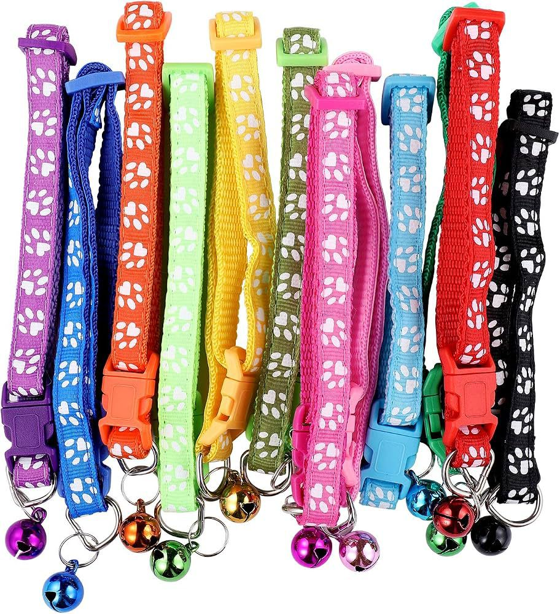
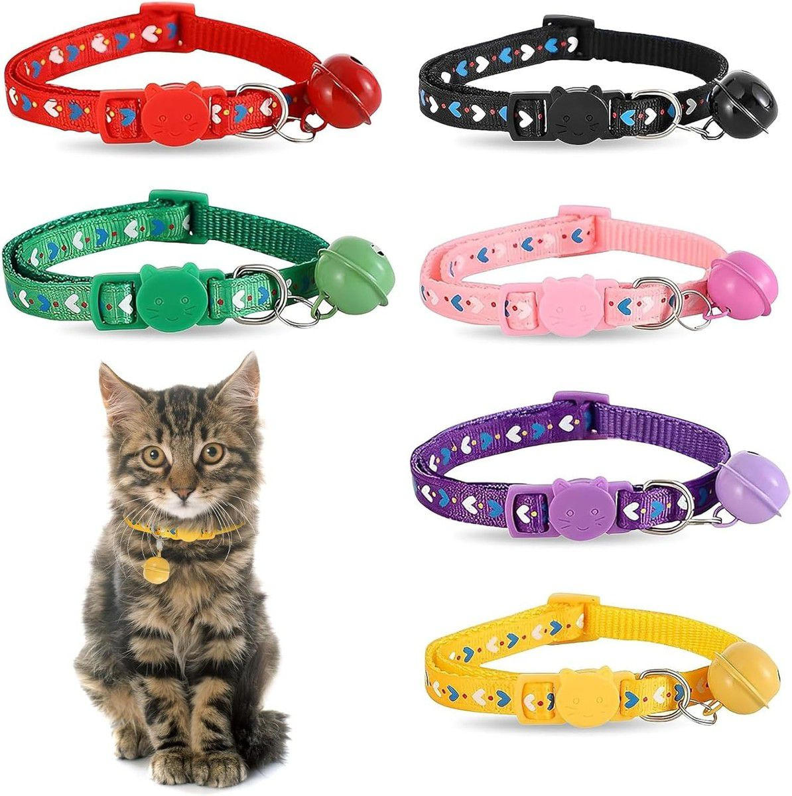

Acessórios para petsColeiras coloridas
Coleiras coloridas
para pets
Coleiras ajustáveis com estampados coloridos, fecho em fivela e argola metálica. Consulte a Win Win Pet Shop para confirmar cores, tamanhos e modelos disponíveis.
- Tiras ajustáveis
- Fecho em fivela
- Argola metálica
- Várias cores

Para cães e gatos
Uma coleira que combina com a personalidade do seu pet.
Escolha entre cores e estampados variados. Antes de comprar, confirme sempre o tamanho adequado e ajuste a coleira de forma confortável.
- Modelos com fivela de ajuste
- Argola para identificação ou acessório
- Campainha visível em alguns modelos
Detalhes visíveis
Pequenos detalhes, muitas combinações.
As cores e acessórios podem variar conforme o stock disponível. Confirme o tamanho e o fecho antes da compra.
Confirme o tamanho certo.
A coleira deve ficar ajustada sem apertar. Meça o pescoço do seu pet e peça ajuda à nossa equipa se tiver dúvidas.
Verifique o ajuste regularmente.
Observe o encaixe e o estado da fivela e da argola, especialmente durante o crescimento do animal.
Comprar na Win Win
Escolha a sua favorita na loja.
Indique o tamanho
Partilhe a medida aproximada do pescoço e o porte do seu pet.
Confirme as opções
A equipa informa as cores e os modelos disponíveis no momento.
Experimente na loja
Visite-nos em Maputo para confirmar o ajuste antes da compra.